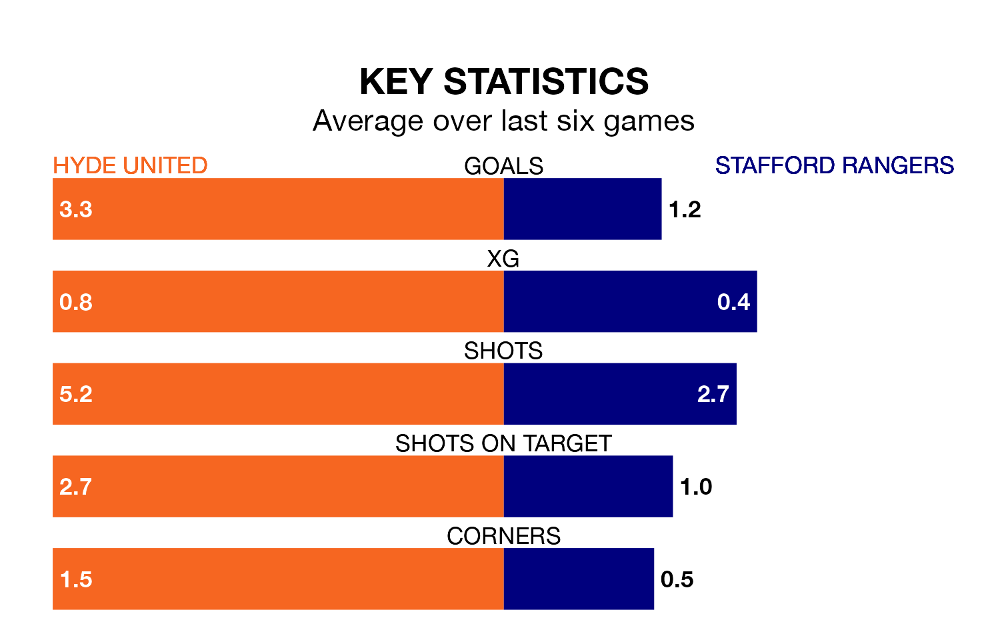

Relegation candidates Stafford Rangers face a challenge away against high-flying Hyde United at Ewen Fields on Saturday.
Stafford Rangers are rooted to the bottom of the Northern Premier League table, and have picked up five wins and two draws in their 28 games to date.
Hyde, meanwhile, are third in the standings with 55 points, having won 16 and drawn seven of their first 30 matches, and are 12 points behind table-toppers Radcliffe Borough.
With 27 goals in 28 games so far this season, Stafford are the league's lowest scorers with 1.0 goals per game. And they are conceding more than average, letting in 62 goals at a rate of 2.2 per game.
Hyde, meanwhile, are above average scorers, with 1.9 goals per game, compared to a league average of 1.7. They have conceded 1.1 goals per game.
United are in fantastic form in the Northern Premier League, with five wins and a draw from their last six games.
With two wins and four losses over that period, Rangers's form is much worse – they have taken six points from 18, compared to the home team's 16.
In the last 10 years, Hyde and Stafford have played each other on 10 occasions. Hyde won eight of them and they drew twice.
On average, Hyde scored 2.2 goals and Stafford 0.7 in those matches.
Their last meeting was on September 26, when Hyde won 2-1 away.
Hyde's last match was on February 10, a 0-0 draw against Basford United.
Stafford lost 2-0 against Ilkeston Town last time out, on January 27.
Updated: 09:02 (UTC), 13/02/24